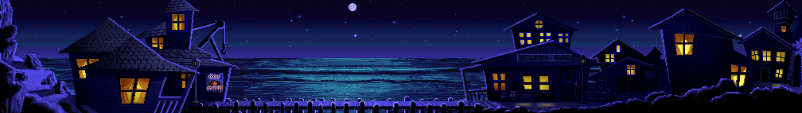
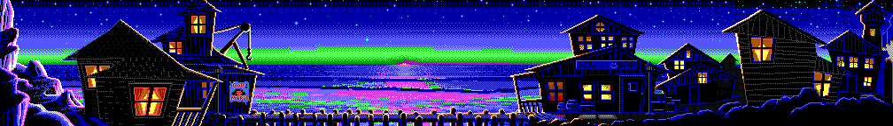
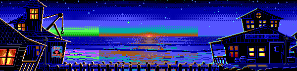
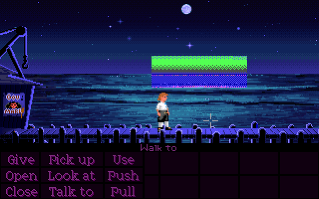
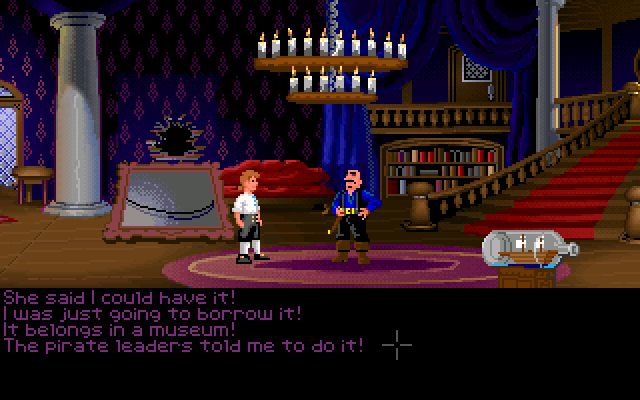
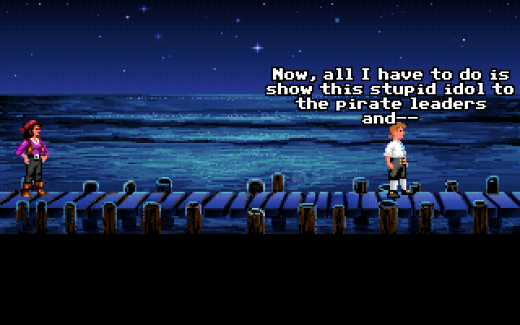
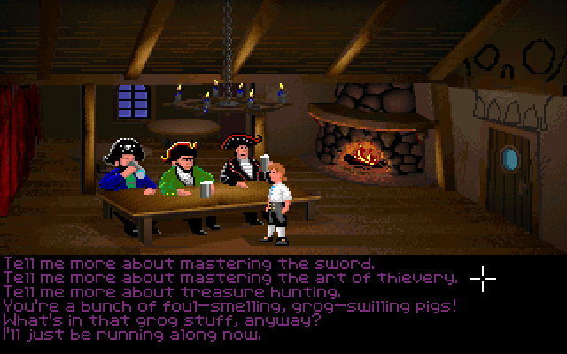
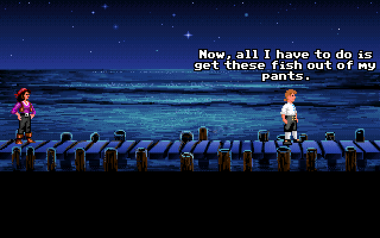
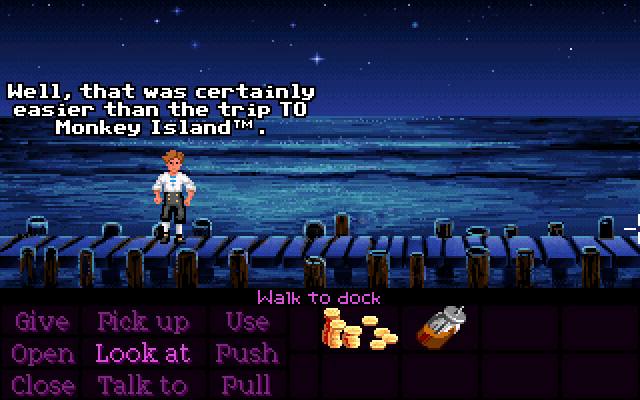
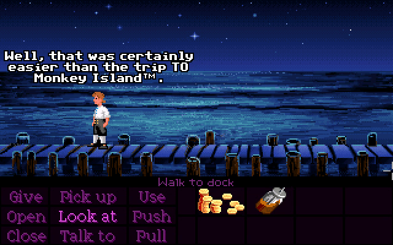

In the EGA floppy version, a sunset can be seen from the Dock when Guybrush first arrives on Mêlée Island, which later disappears. Rather than creating two separate versions of the artwork, the game uses palette cycling for this - essentially swapping out specific colors in the background to make it look one way or the other.
Internally, the background used for the Dock looks like this:

Rather than treating one of the two states as the "default" and drawing the background that way, the artist instead used greens and purples as placeholders for the colors that need to change.
This comparison might make it easier to see exactly how the colors are being replaced:

Doing it this way probably made it easier for the developers to keep track of which colors are being swapped out, but it certainly makes the raw image look pretty unsettling. It was probably too complicated to recreate in VGA, which is why it was removed, but they at least made up for it by adding the moon instead.
This is a slight tangent, but the trigger for the sunset going away is Guybrush entering High Street. This means it's possible to raid the kitchen, earn money at the circus, feed the troll, buy the map, find the treasure (but not dig it up), and visit Carla, Meathook, Smirk, and the Voodoo Lady all before the sun has set.
Even though the sunset was removed, a remnant of it still exists in the VGA versions!

This patch of EGA background is meant to hide the sun itself, since it can't be removed with palette cycling alone. It has no business being in the VGA versions, but was left in the files anyway.
This one requires a bit of a detour to fully explain.
Typically, when completing the thievery trial, the sequence of events will go something like this:
After Guybrush escapes from the chaos rooms in the mansion with idol in hand, Shinetop confronts him and asks for his "explanation". At this point, there will be four dialogue options to choose from:
"She said I could have it!"
"I was just going to borrow it!"
"It belongs in a museum!"
"The pirate leaders told me to do it!"

For now, it doesn't matter which we choose.
Later, when Guybrush climbs out of the water (provided there's still at least one trial left to do), he'll say the following: "Now, all I have to do is show this stupid idol to the pirate leaders and--". So far, there's no apparent connection between this and the dialogue choice from before.

However, this might go a little differently depending on what we say (or rather, don't say) to the pirate leaders earlier in the game. After they tell Guybrush about the trials, he can ask them for more info about specific ones. The dialogue option we're interested in here is the one that says "Tell me more about mastering the art of thievery."

If we get to the dialogue choice with Shinetop without having asked the pirate leaders about the thievery trial beforehand, the dialogue options will be different! Instead of the fourth option being "The pirate leaders told me to do it!", it will be:
"I was just taking it out for a walk."
If we choose the line about taking the idol for a walk (and ONLY the line about taking the idol for a walk), then when Guybrush later gets out of the water, he'll instead say:
"Now, all I have to do is get these fish out of my pants."

To be clear, there is zero logical connection between these two events, narratively-speaking. Unlike in the mansion, the game isn't accounting for whether or not Guybrush actually talked to the pirate leaders about the thievery trial here - if you chose one of the other options when talking to Shinetop, Guybrush will always mention the pirate leaders regardless, and he'll talk about the trials after the scene with Elaine as well.
It's possible the fishpants line was supposed to correlate directly with Guybrush talking to the pirate leaders and the programmers simply got their logic very muddled up, but the code looks intentional to me. Maybe there was a point in development where not talking to the pirate leaders led to the "taking it for a walk" line being the only choice? Or maybe they just programmed it this way on a whim?
At the beginning of Part 4, Guybrush will make a remark about whoever he sailed back to Mêlée with, depending on whether or not you sank the ship during Part 3. Then, when you try to leave the screen to the right, a ghost called Biff will chase Guybrush back onscreen.
However, if you click to walk offscreen as soon as possible, the timing of the dialogue means Guybrush's remarks get delayed until after Biff finishes chasing him. This means Guybrush ends up talking to himself absentmindedly about something unrelated while Biff is staring him down.

